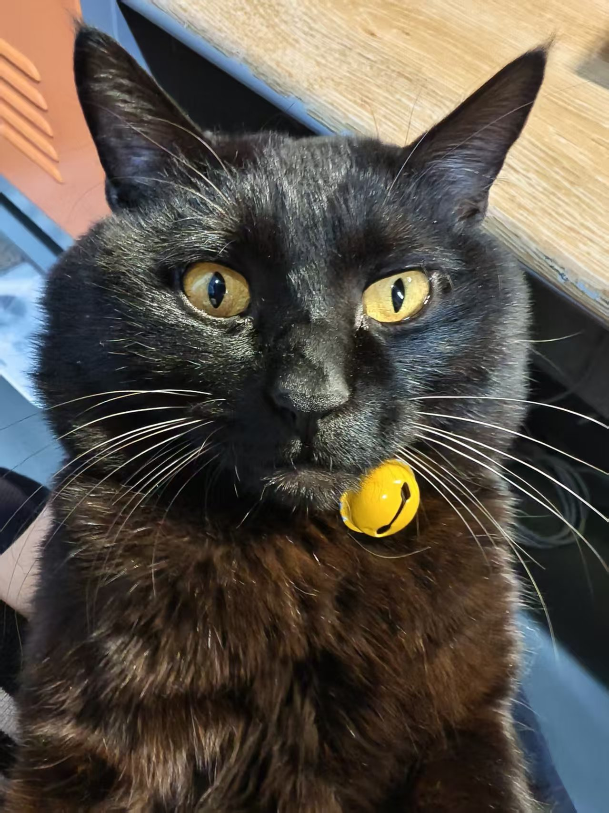
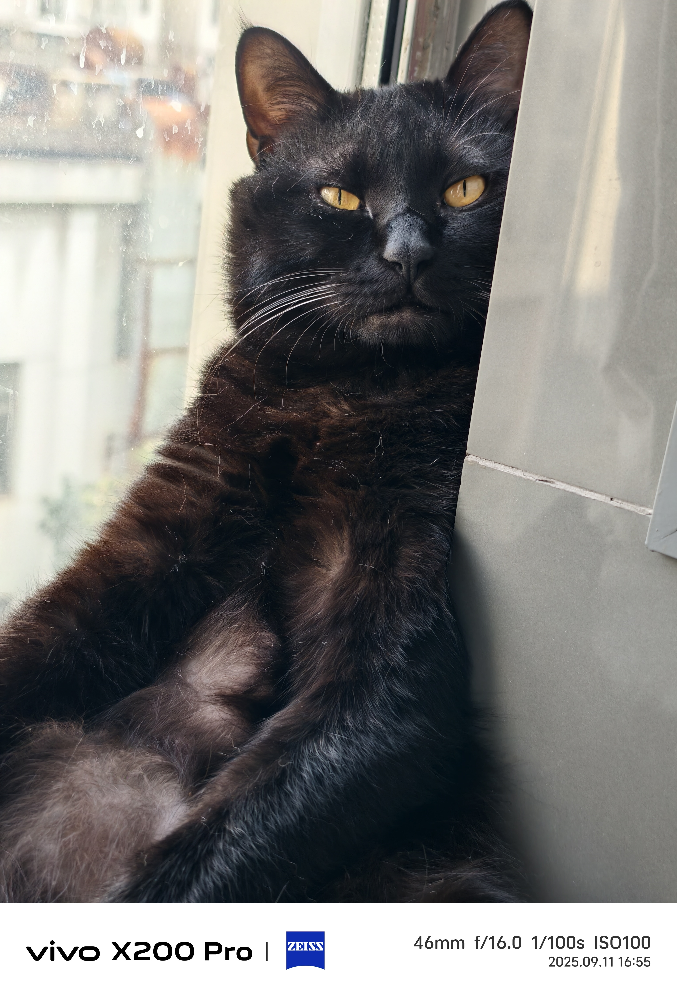

Fanyouhao
Library / Lab
Mavs Fan (Kai & Luka)
0
距离考试还有
00
:
00
00
LOADING...
资源中心
数字视频技术复习
DOCX
通信原理 (Pending)
PDF
摸鱼小游戏
HTML
WUHAN
加载中...
--
°C
--
km/h
--
%

🐱小猫墨墨
GitHub Hosted Gallery 🐾
💬 留言墙
正在连接量子网络...
🎂
Happy Birthday!
黄宇晨
System Notification: Special Day 🎉
收下祝福 🎁